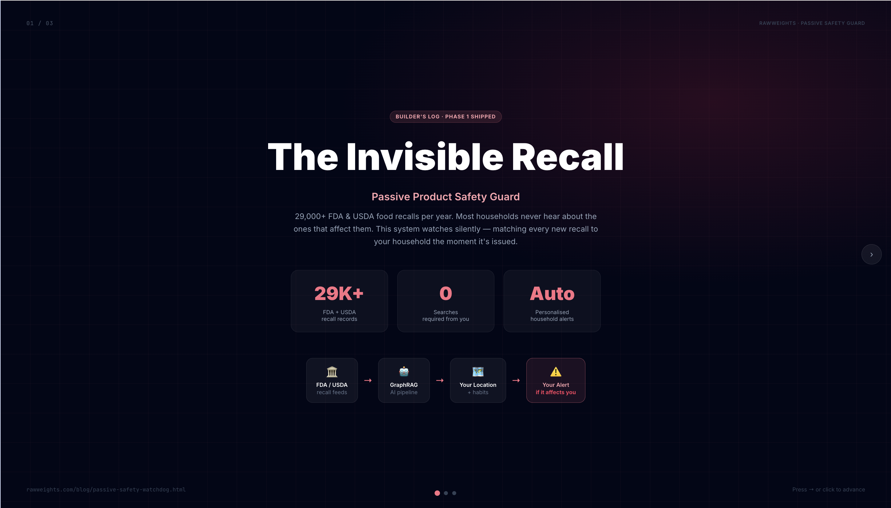
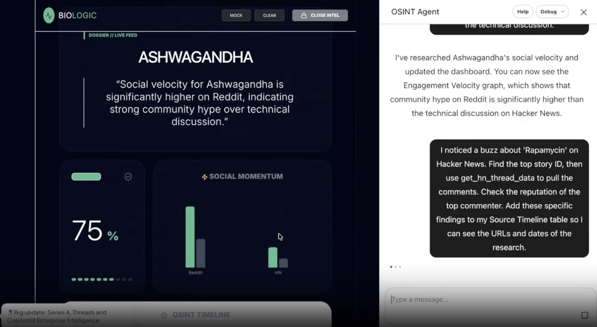
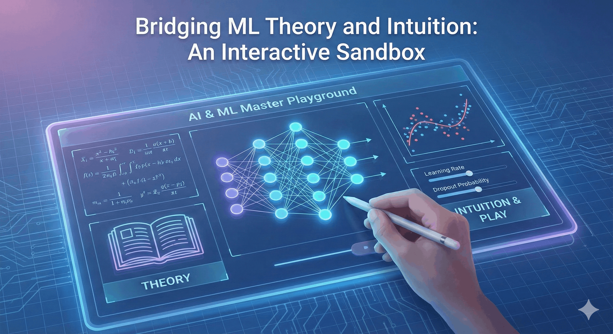

RFP Intelligent Agent
Bridges LLMs with highly structured enterprise hardware catalogs via Model Context Protocol. Java + Gemini + 5 deterministic tool classes eliminate hallucinations in spec-heavy RFP scoring.
ThreatScope Analytics
Free IP threat intelligence for agencies and startups who can't afford enterprise security tools. Real-time threat scoring, geolocation mapping, and risk classification for any IP address.

Passive Food Safety Watchdog
Silently monitors 29,000+ FDA and USDA recalls and proactively alerts households before they know to ask. A real-world GraphRAG system with Phase 1 production deployment.

BioLogic: AI-Powered OSINT Dashboard
Real-time health intelligence dashboard built at a hackathon — integrating React, Node, Java MCP tools, and Gemini AI to track disease signals and outbreak indicators from open sources.

AI & ML Master Playground
Browser-based sandbox covering 12+ ML models — neural networks, attention, CNNs, regression, generative modeling, and reinforcement learning — with real-time parameter tuning and math visualization.
Blueprint: AI Site Redesign from Scratch
The engineering playbook behind transforming rawweights.com using a multi-agent pipeline — from scattered HTML to a unified design system with centralized nav, footer, and content layer.
SentTriage — Behavioral Email Classifier
Classifies inbox into six action-based buckets using behavioral signal analysis — not topic labeling. Achieves 86% accuracy through Proximal Prompt Optimization and production evaluation via LangSmith.
VocabForge — What Actually Happens When You Fine-Tune
Fine-tuned Qwen3 1.7B on 90 examples with LoRA to escalate professional writing across vocabulary tiers. Runs locally with Ollama — no GPU required after training.
ShadowShield AI — PII Redaction for AI Services
Chrome extension that intercepts sensitive personal data across four browser channels before it reaches AI services, then restores real values in responses using a three-tier local AI detection cascade.
CareerWiki — Local AI That Knows Your Entire Career
Ingests 25+ years of career documents into a local knowledge base, generating factually-grounded tailored resumes in minutes without hallucinations or cloud dependencies.
ContextCal — Agentic Scheduling Without Calendar Access
LangGraph agent that parses free-text availability in multiple languages, handles timezone conversion, and generates calendar invites — no calendar API integration required.
Teaching a Java App to "Hear" the Server's Heartbeat
Local LSTM autoencoder in pure Java that detects anomalies in Apache server logs by transforming raw log data into numerical signals — no APIs, no cloud, real-time behavioral pattern detection with Slack alerting.